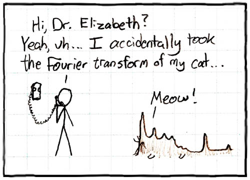
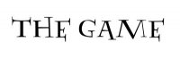

Fun
Philosophy
- jpastafarianism. seriously.
- Rational Materialism (Greg Egan - Luminous)
- E. Brevdo. "How do the Buddhist teachings of the Noble Eightfold Path lead to the cessation of suffering?" PHIL-4570 final paper. circa 2003.
Addictions
- 

Loves
- Running. Princeton's Tow Path. Any trail that goes on and on and on...
- Haruki Murakami's novels. Especially this one.
- The Pacific. Especially Kauai.
- Matsuo Basho's haikus. (check out Alan Watts' version)
- Indie rock.
Random
I helped to organize Princeton's "The Game" in 2006.
